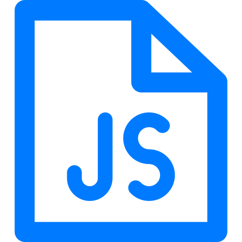

Web Developer
Ilyas Mohamed Gazali
My name is Ilyas Mohamed Gazali. I have a MSc Sofftware Engineering degree with a Computer Science BSc. I started my career doing an internship at Google and went on to a start-up, TAKEMOREPHOTOS. I am passionate about web developmet. Welcome to my portfolio website.
What I Do
I enjoy writing code The sense of accomplishment when solving a
really complicated problem cannot be beat!
Programming is a continuously changing and evolving industry.
Every day different languages become more popular and tools
change. In order to grow within the industry, continous learning
is important.
Development helps you accomplish innovative projects and make you
a valuable asset to the company. You can visualize and understand
the risk and challenges.
I enjoy collaborating and working with others to complete tasks
and projects. Teamwork skills and experience make it a much better
experience for everyone on the team.
Skills
-
React
-

javascript
-
.svg) Typescript
Typescript
- Tailwind
- CSS
-
.svg) Scss
Scss
- Node js
Relative parent
Absolute child